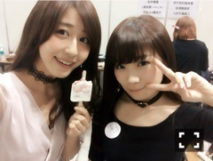

| 2016/06 07 Tue | 斎藤ちはる 真夏の頭の鉢がいいくぼみになって、ペットボトルが上手く乗ります。真夏の頭の鉢をペットボトル置き場にしたらきっと世界は平和だ。(´>∀<｀)ゝ |
ちはるーむへようこそ\( ˆoˆ )/
みなさんたくさんのコメント本当にありがとう。
たくさん頑張れって言ってくださる方がいて
応援してくださる方がいて
本当に負けられないと改めて感じています。
本当に諦めないぞと燃えています。
少しでも期待してくれる方の気持ちを裏切りたくないから。
少しも期待していない方の気持ちをいい意味で裏切りたいから。
まだまだやれるぞって。
斎藤ちはるやるなぁって思わせたい。
私は前しか向いてません。
これは横見てるけど。
ひめにぎゅってしてたら撮られた写真。
ひめは中々私に甘えてくれないので
私がいつもひめに甘えにいきます。
昨日のNOGIBINGO！6観てくれた方
私の真夏への塩対応に驚いたかな？( ◦˙ ˙◦ )笑
だってじょしらくの稽古期間、疲れていっぱいいっぱいのときに
突然なんの前触れもなくあのメッセージがくるんだもん！！
そりゃ「一生捨て猫でいろ！」とも言いたくなります。
私は普段から真夏にだけは、当たりが強いです！
自分でも自覚あり！！
今日は真夏の頭の鉢にペットボトルを乗せたら上手く乗りました。
あと、真夏が着替えてて恥ずかしそうにしてるところをずーっと見てました。
あと、真夏にギガ200の♪犬も歩けば〜のところ歌って！と言ったら、♪ギガ！のサビ頭から振り付きで歌ってくれました。でもそこは元々知ってたので、頭から歌ってとは言ってないよ、と言いました。
つまり、何かというと、仲良しということです！
真夏と仲良し！！
なんだかんだ真夏は優しいです。
普段は絶対言わないけど真夏がいると元気でるよ〜！！大好き！！

ペットボトル置き場もいいけど、
たまに食べかけのアイス置き場と化す。
これからも私は真夏に塩対応♡
真夏に対してツンデレ発揮♡
皆さん温かく見守っていてね(｡･o･｡)ﾉ笑
さて、今日はサイン会でした！
ファンの方の私物にサインしました！
楽しかったな〜
スペシャルイベントって特別な感じする\( ˆoˆ )/
少人数しか当たらないっていうドキドキ感もいいよね！痺れるよね！
私は握手会も好きだけどね♡
ぷん。
梅雨は髪が広がるよ。
朝に髪の毛巻いても、学校着く頃にはストレート風になってるよ。
メイクさんにも髪の毛が湿気を吸いやすいね〜！って言われて悲しくなったよ。
なーつよ、こい。
なーつよ、こい。
(はーるよ、こい。ではない。)
雨の日の楽しみ方を教えて！！
雨が好きな方！！
毎日を楽しんで生きなきゃ人生損だもんね！！
斎藤ちはる